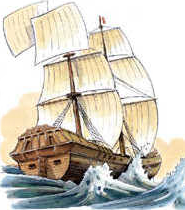
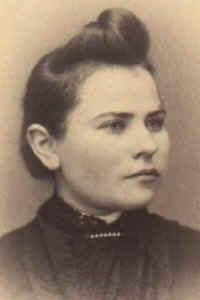

|
|
|
| ||||||||||||||||||||||||||||||||||||||||||||||||||||||
|
 |
L'ANCÊTRE DE LA PREMIÈRE HEURE De tous nos lignées ancestrales connues à date, Robert Caron est celui qui arrive le premier en Nouvelle-France le 4 juin 1634 (il est du premier groupe amené par Robert Giffard). Mathieu Choret, lui aussi colon à Beauport, près de la seigneurie de Robert Giffard, ne viendra que dix ans plus tard. |
|
|
Robert Caron, probablement né le 22 juillet 1613 à Rouen en France, embarque pour la Nouvelle-France sur l’un des quatre bateaux de la Compagnie Cheffault-Rozee (une compagnie fondée pour 5 ans, basée à Rouen, et chargée de transporter des immigrants dans la vallée du St-Laurent). Robert Caron arrive donc avec Robert Giffard, seigneur de Beauport, et tous les premiers colons qui l’accompagnent, Jean Côté, Jean Bourbon, Noël Langlois, Zacharie Cloutier. Chaque
immigrant est engagé pour 3 ans à 75 livres par an (logé, nourri). Ensuite il est libre de repartir en France ou de s’établir au pays. |
||
|
|
||
Le 25 octobre 1637 Robert épouse Marie Crevet (16 ans) arrivée au pays en juillet 1637. Elle est la fille de Pierre Crevet et de feue Marie Lemercier, de Bénouville, évêché de Bayeux, en Normandie. Le mariage a lieu dans la chapelle Notre-Dame-de-la-Recouvrance. Il est béni par le jésuite Charles Lallemant, qui fait fonction de curé à Québec. Jasmin Bourguignon, un ami, Noël Langlois, un colon de la première heure, et Robert Giffard, chirurgien et seigneur de Beauport, assistent au mariage comme témoins. De cette union naîtront sept enfants.
En 1639 c’est la naissance de Marie Caron, en 1641 celle de Jean-Baptiste. À noter qu'en 1641 la population en Nouvelle-France est de 300 habitants, alors qu'il y en a 50,000 en Nouvelle-Angleterre. En 1642 Robert, craignant, non sans raison, les Iroquois, vend sa terre à son voisin Guillaume Couillard pour 150 livres. Il s’installe à Québec sur le côteau Sainte-Geneviève, qu’on nommera plus tard « le Belvédère », il défriche une terre pour faire une clairière et mieux voir les agissements des Iroquois. Le bois est sa principale source de revenus. Plusieurs colons d'origine normande étaient installés dans ce coin que l'on situe sur l'emplacement de l'actuel Collège des Jésuites, coin René-Lévesque et Joffre. Dès le printemps 1643, il s'adonne au défrichement de sa terre des hauteurs de Québec. La compagnie des Cent-Associès lui remet trois ans plus tard le titre officiel de sa concession de 40 arpents de terre, entre les propriétés de Louis Sédillot et de Claude Larchevêque. Le gouverneur Louis D'ailleboust lui donnera ensuite 20 arpents de plus. Le 6 décembre 1652, le gouverneur Jean de Lauzon reconnaît ces deux titres pour, semble-t-il, l'inciter à demeurer à cet endroit En
1647 naît Robert jr, en 1649 c’est la naissance de Catherine, en 1652
celle de Joseph et en 1654 celle de Pierre. Pour une raison que lui seul connaît, en 1654, Robert Caron vend toutes ses propriétés de Québec. Sa terre du côteau Sainte-Geneviève est vendue à Charles D'Ailleboust, neveu du gouverneur, pour la somme considérable de 1700 livres Quelques mois auparavant, Robert avait acheté de Julien Fortin dit Bellefontaine*, au prix de 500 livres, une terre de cinq arpents de front par une lieue de profondeur sur la côte de Beaupré, à Sainte-Anne-du-Petit-Cap, soit un mille à l’est de l'actuelle basilique Sainte-Anne. En 1656 c’est la naissance d’Aymée Caron. *
Julien Fortin dit Bellefontaine est l'ancêtre direct de
Marie-Hélène. Mais il est aussi notre ancêtre par la lignée Caron car deux
générations de Caron ont épousé des Fortin. Donc, Julien, Olivier et
Antoine Charette descendent par deux lignées de Julien Fortin dit
Bellefontaine, l'une maternelle, l'autre paternelle. |
||
|
|
||
Le 8 juillet 1656 Robert Caron meurt à 44 ans à l’Hôtel-Dieu. Accident ou maladie? Cette
mort plonge Marie
Crevet dans l’indigence, ses enfants étant trop jeunes pour
l'appuyer. Elle sépare sa
famille en envoyant les deux plus vieux garçons chez des amis à Québec et
elle s’installe à Château-Richer. Le 4 juin 1660 Marie Caron (la fille aînée), qui avait épousé Jean Picard le 28 juillet 1656, est enlevée par des Hurons alliés aux Iroquois avec sa fille Louise (née le 29 septembre 1659) et trois enfants de colons qu’elle garde. Son mari fait les semences avec des voisins (les gens se regroupent pour mieux se défendre en cas d'attaque). Alerté, le gouverneur d'Argenson envoie une troupe de Français et d'Algonquins à la recherche de la jeune femme et des enfants. Ils débusquent les ravisseurs à la Pointe de Lévy deux jours plus tard. Marie, couchée dans le canoë, ayant entendu des voix amies, lève la tête et est frappée d'une balle qui tue en même temps l'enfant qu'elle porte dans ses bras. On la conduit à l'hôpital, elle meurt deux jours plus tard. Sa petite fille est élevée par ses grands-parents Picard. Le
16 novembre 1661 Jean-Baptiste Caron (le fils aîné) épouse Marguerite
Gagnon. Cela permet à Marie Crevet de revenir sur sa terre à Sainte-Anne-de-Beaupré avec sa famille.
En effet, elle loge et nourrit
Jean-Baptiste et sa nouvelle épouse et en contrepartie il met la terre en
valeur. En 1663 la population augmente à 2,500 habitants ( et à 80,000 en Nouvelle-Angleterre). Dix
ans après le décès de Robert Caron, le
27 juillet 1666, Marie Crevet se marie en secondes noces avec Noël Langlois à
Château-Richer. Pour éviter les querelles entre les héritiers
Langlois et Caron, Marie et Noël ont passé un contrat de mariage en
"séparation de biens". Marie et Noël se
connaissent depuis longtemps. Il était pilote, né en 1603 en France
et arrivé au Canada en 1634 en même temps que Robert Caron. Noël avait
été témoin au mariage de Marie et Robert Caron. Il avait lui-même
épousé en premières noces Françoise Garnier dont il eut dix enfants. En 1672 la population est de 6,700 habitants (et de 120,000 en Nouvelle-Angleterre). Le
15 juillet 1684 Noël Langlois (le beau-père des enfants Caron) décède à
Beauport à 80 ans. À ce moment-là il est le plus vieil
habitant au pays. En
1695 Marie Crevet meurt à Baie-St-Paul où elle réside chez sa fille
Catherine. Cette dernière, veuve de Jacques Dodier, a épousé en
secondes noces Pierre Dupré à qui on concède le 30 décembre 1682 la
seigneurie du Gouffre. Il est le premier colon de Baie St-Paul. |
||
|
DEUXIÈME GÉNÉRATION, JOSEPH CARON |
||
|
Joseph Caron, né en 1652 à Québec, s'installe dans le Bas du Fleuve. Ceci parce qu'à l'automne 1672 sa soeur cadette, Aymée, épouse un des fils de leur beau-père, Noel Langlois fils dit Traversy. Frontenac concède à ce dernier la Seigneurie de Port-Joly. Il la vendra en 1686, n’ayant pu rencontrer les exigences demandées à un seigneur, mais, entretemps, plusieurs de ses beaux-frères Caron, dont notre ancêtre Joseph, suivent leur sœur et son époux et migrent vers cette nouvelle région à développer, le Bas du Fleuve. En 1678 Joseph Caron commence à défricher une terre à Port-Joly. Il réside chez son frère Pierre à Cap St-Ignace. C’est un excellent charpentier et il construit plusieurs maisons et granges pour les colons. En
mars 1683 Joseph Caron construit la première église de Cap
St-Ignace. Elle est en bois et mesure 40 pieds de long sur 25 pieds de large. En 1711 Joseph Caron décède à Cap St-Ignace. Il laisse 5 enfants. source:
Les Caron d'Amérique. |
||
|
|
||
|
CARON |
||
|
Robert Caron |
mariage 25 octobre 1637 |
Marie Crevet |
|
Joseph Caron |
27 octobre 1684 |
Elisabeth Bernier
|
| Joseph Caron | 1 juillet 1711 | Marie-Anne Fortin |
| Joseph Caron | 3 avril 1742 | Josephte St-Pierre |
| Pierre Caron | 12 août 1783 | Madeleine Fortin |
| Joseph Caron | 17 novembre 1812 | Geneviève Chouinard |
| Joseph Caron | 6 novembre 1866 | Geneviève Anctil St-Jean |
| Arthur Caron
|
12 octobre 1891 | Alphonsine Gagnon
 |
| Marie-Anna Caron
|
16 janvier 1917 | Rosario Charette
|
| Jacqueline
Consigny
|
29 juin 1946 | Gérard
Charette
|


|
Marie-Anna,
son enfance Son
époux Rosario Sa vie de
famille Site créé le 27 août 2002, en 800 X
600. ©Nicole Charette |